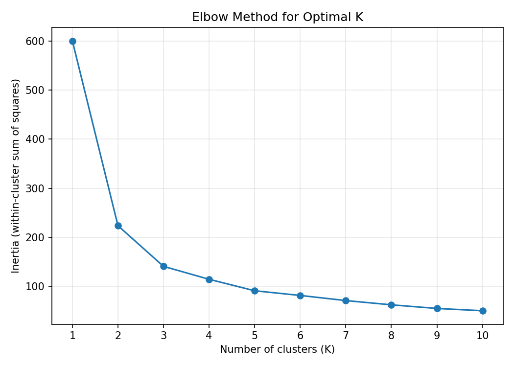
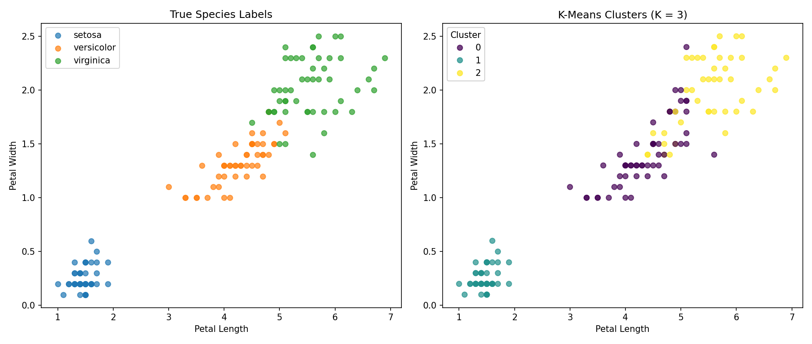
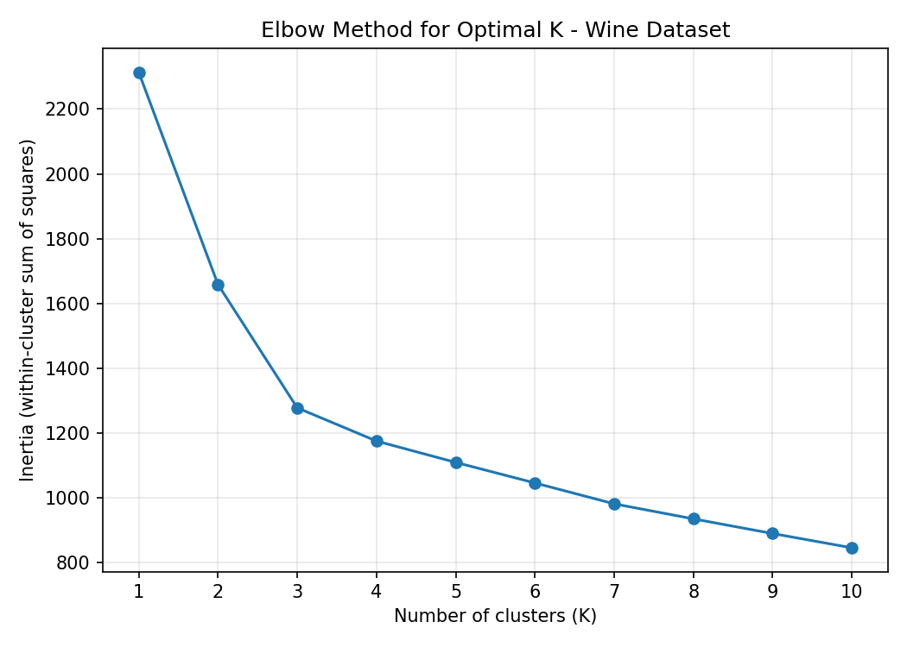
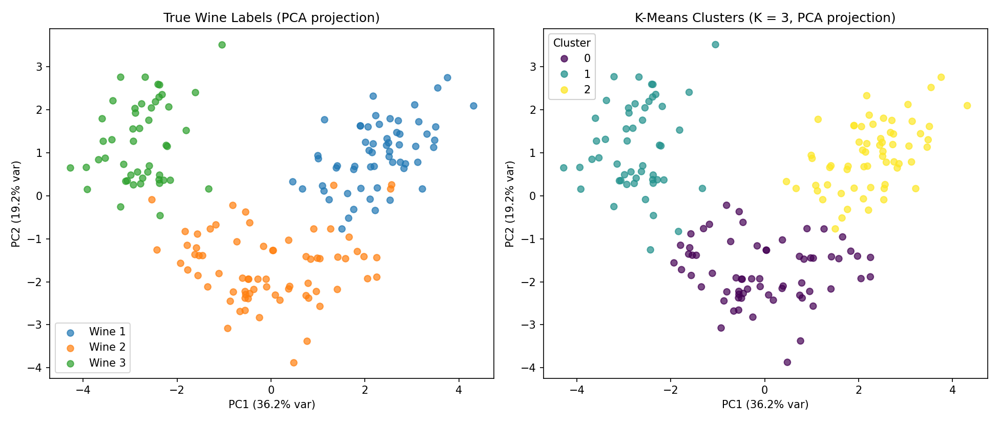
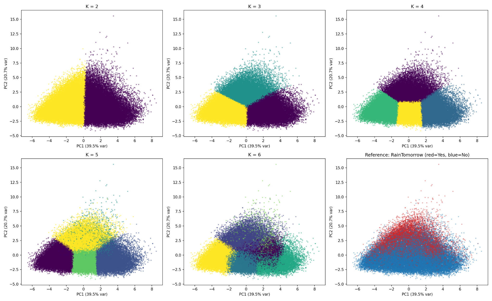
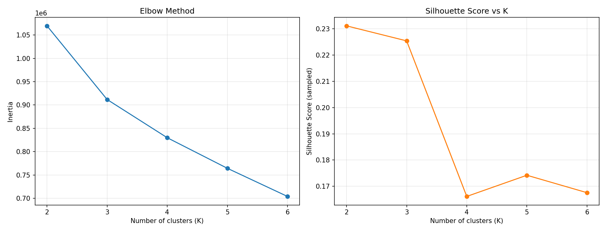
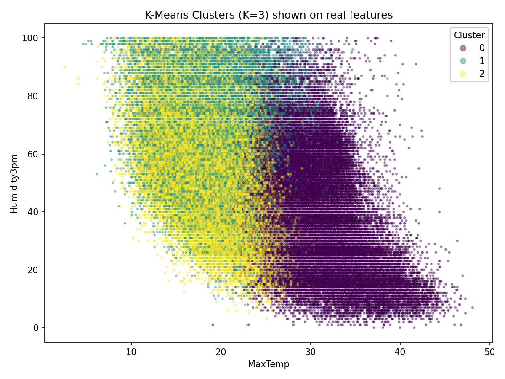

Unit 6 — Clustering with Python
Clustering task
K-means clustering applied to three different datasets: Iris, Wine and Weather (weatherAUS). Each has its own Python script, linked from its section below.
Iris
The standard Iris dataset with the columns sepal_length, sepal_width, petal_length, petal_width and species. What I did:
- Removed the non-numeric
speciescolumn for clustering. - Ran K-means (including K = 3) and compared the K = 3 clusters against the actual species labels.
What the script does
- Drops the species column before clustering — it is text, and K-means needs numeric features since it computes Euclidean distances. The 4 remaining columns are standardised and used for clustering.
- Elbow method runs K = 1–10 to show inertia dropping off, confirming K = 3 is a reasonable choice.
- Fits K-means with K = 3 as required.
- Compares clusters to true species via a crosstab, Adjusted Rand Index and Normalized Mutual Information.
Results
| Species | Cluster 0 | Cluster 1 | Cluster 2 |
|---|---|---|---|
| setosa | 0 | 50 | 0 |
| versicolor | 39 | 0 | 11 |
| virginica | 14 | 0 | 36 |
- Setosa is perfectly separated — it forms its own cluster (Cluster 1) with zero mixing.
- Versicolor and virginica overlap somewhat — 11 versicolor points are grouped with virginica-heavy Cluster 2, and 14 virginica points fall into the versicolor-heavy Cluster 0.
- Adjusted Rand Index: 0.62, Normalized Mutual Information: 0.66 — moderately strong agreement with the true species labels (1.0 = perfect match).
- Roughly 83% of points end up in the cluster matching their majority species.
This matches the well-known pattern in the Iris dataset: setosa is linearly separable from the other two species based on petal measurements, while versicolor and virginica have some natural overlap in feature space, making them harder for an unsupervised method to fully distinguish.


Wine
Excellent results — very strong agreement between clusters and true labels.
What the script does
- Drops the Wine column (the true class label 1/2/3) before clustering — it is a category, not a chemical measurement, so keeping it in would let the model "cheat".
- Standardises the 13 remaining chemical features — critical here since Proline ranges into the hundreds and thousands while Hue is close to 1; without scaling, K-means would be dominated entirely by Proline.
- Elbow method across K = 1–10 to see where added clusters stop reducing inertia much (supports K = 3).
- Fits K-means with K = 3 as required.
- Compares clusters to the true wine labels.
Results
| True label | Cluster 0 | Cluster 1 | Cluster 2 |
|---|---|---|---|
| Wine 1 | 0 | 0 | 59 |
| Wine 2 | 65 | 3 | 3 |
| Wine 3 | 0 | 48 | 0 |
- Adjusted Rand Index: 0.90
- Normalized Mutual Information: 0.88
- ~97% matching accuracy against the true labels (best mapping: Cluster 0 → Wine 2, Cluster 1 → Wine 3, Cluster 2 → Wine 1).
This is a much cleaner separation than the Iris case — the three cultivars are strongly distinguishable by their chemical profiles (alcohol, flavanoids, colour intensity, proline, etc.), so unsupervised K-means recovers the true grouping almost perfectly, with only 6 wines out of 178 misassigned.


Weather
What the script does
- Removes non-numeric columns —
RainTodayandRainTomorroware Yes/No text labels, not measurements a Euclidean distance can be computed on, so they are excluded from clustering. (RainTomorrowis kept aside purely to colour a reference plot afterwards, since this dataset has no ground-truth cluster labels like species or wine class.) - Drops rows with missing values — from 145,460 rows to 120,381 complete rows, since K-means cannot handle NaNs.
- Standardises the 12 numeric weather features (temperature, rainfall, humidity, wind, pressure) since they are on very different scales.
- Runs K-means for K = 2 through K = 6, tracking inertia (elbow) and silhouette score for each.
- Visualises every K with 2-D scatter plots using PCA (since 12 features cannot be plotted directly) — all six panels side by side, plus a reference panel coloured by
RainTomorrow.
Key findings
| K | Inertia | Silhouette (sampled) |
|---|---|---|
| 2 | 1,069,604 | 0.231 |
| 3 | 911,739 | 0.225 |
| 4 | 829,797 | 0.166 |
| 5 | 764,249 | 0.174 |
| 6 | 703,919 | 0.168 |
- Silhouette score peaks at K = 2 (0.231), meaning the data most naturally splits into two broad groups — likely something like "cooler/humid" vs. "warmer/dry" weather regimes, visible as a clean vertical split in the K = 2 panel.
- As K increases, the clusters just subdivide these two broad regions further rather than revealing genuinely new structure — inertia keeps dropping (it always does), but silhouette drops off, meaning the extra splits are less well separated.
- Unlike Iris and Wine, there is no true "answer key" here (no species or wine-class column), so this is a purely exploratory result rather than something to validate against ground truth.
- The reference panel comparing PC1/PC2 to
RainTomorrowshows rainy days leaning toward the upper region (higher PC2 — likely correlating with humidity), but there is no clean separation — rain is not strongly determined by these same-day readings alone, which makes sense since predicting tomorrow's rain is a genuinely harder problem than clustering today's conditions.



Team project
This is also the unit in which Team F's project began: the Airbnb NYC pricing question was scoped and the initial regression/clustering plan agreed. See the Team Project page for the proposal, meeting notes, full report and the evaluation against the Unit 11 submission.